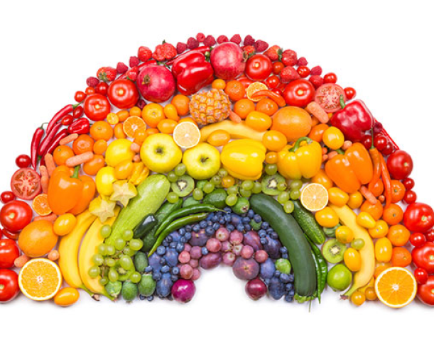
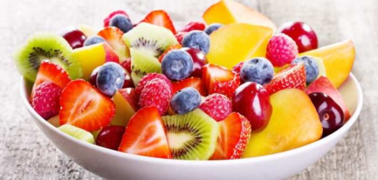

- In ziua de proteine puteti alege un aliment din cele grupe proteine (carne - un singur tip de carne; branzeturi si lactate; oua) - verificati cantitatile in schemele cu gramaje permise
- Proteinele se pot gati fripte, fierte, pe gratar, la abur, la cuptor, la dry
- Pe langa proteina aleasa, este recomandat sa suplimentati meniul cu legumele permise zilnic (gatite sub forma de salate, la dry, la cuptor, piureuri de legume, la gratar, fripte, la abur)
- Proteinele nu se combina si nu se schimba! Se consuma aceeasi proteina si la pranz si la cina! Puteti schimba modul de a o gati. Legumele permise se pot combina si se pot schimba
- Se pot cosuma intr-o zi diferite parti dintr-o pasare/animal atata timp cat se pastreaza acelasi animal (ex: pranz pulpa de pui / cina piept de pui; pranz cotlet de porc / cina ficat de porc)
- Este permis sa combinati sau sa schimbati branzeturile si lactatele (ex: pranz branza / cina iaurt; pranz lapte batut si branza / cina cascaval)
- Puteti sa serviti 300 ml supa/ciorba preparata din legumele permise zilnic la care puteti adauga proteina aleasa pentru ziua respectiva. Aveti voie 40 gr paine (aprox. 1 felie)
- La cina nu este voie supa/ciorba si nici paine! La cina se serveste 1/2 din cantitatea de proteina servita la pranz. Nu este necesar sa reduceti si cantitatea de legume permise.
- Lasati sa treaca cel putin 4 ore intre pranz si cina

- Fructe proaspete - orice fel de fructe - cat doriti, in limita bunului simt
- Legume permise zilnic - cat doriti, in limita bunului simt
- Fructe uscate - (smochine, curmale, stafide, ine, etc) - max. 25 gr (fara adaos de zahar sau grasimi)
- Nuci si seminte - orice fel - max. gr (nesarate, neprajite)
- Suc natural de fruc legume - facut in casa - 250 ml reprezinta o masa
- Fructele si legumele pot fi servite sub forma de salate, la dry, piureuri de legume, la gratar, fripte, la abur
- Este permis sa asezonati legumele cu: piper, zeama de lamaie, otet de mere, condimente de orice fel
- Pentru o digestie nu este indicat sa combinati mai mult de 2 tipuri de fructe la o masa